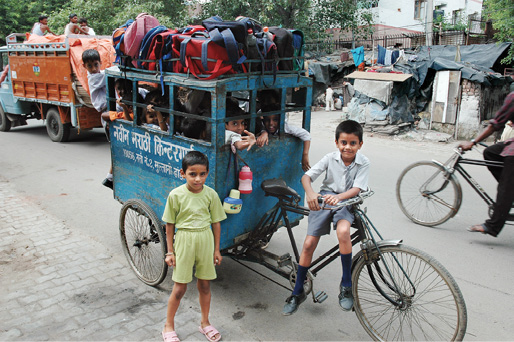
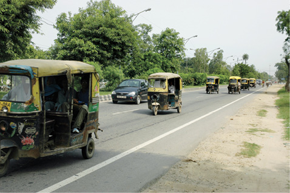
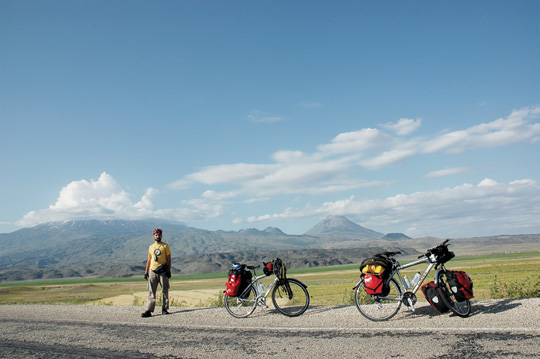

19 AĞUSTOS
Katmandu’dan Pokhara’ya geçtik. Tepelerin arasında gizlenmiş, çevresindeki tapınaklara selam durmuş, renkli giysileriyle karşı kıyıya
yolcu taşıyan kadın sandalcıların kürek izlerinin arasına, Himalayalar’dan gelerek birikmiş bu sihirli sulara, çok uzun süredir yanımızda taşıdığımız kutsal emanetleri armağan ettik. Bu ufak ritüel bedenlerimiz için biten yolculuğun, ruhumuz için de bitmesi anlamına geliyor. Biraz daha büyüyoruz ve bir şeyleri aşıp geride bırakıyoruz. Bu anlatılabilecek bir şey değil. Açıklamak zor.
Kafamda bin türlü düşünce dolaşırken, ilk günden bu yana bir türlü alışamadığım alüminyum ayaklığı tamir imkânı kalmayınca Hindistan’da bir yerlerde attığım geliyor aklıma. Nereden nereye diye düşünüyorum; Doğubeyazıt’ta bir bisikletçiden alınan parça şimdi, Agra yakınlarındaki bir çöplükte. Belki oradan hurdacılar tarafından alınacak, eritilip yeniden başka bir kalıba dökülecek ve kim bilir hangi ülkeye ihraç edilecek, kim bilir ne iş için kullanılacak, kimlerin eline geçecek, nereleri görecek? Ruhu, hayalleri, duyguları olmayan bu metal parçasının serüvenini düşününce insan olarak bizim hayat döngümüzün nerede başlayıp, nasıl devam edip, nerede biteceğini düşünmeden edemiyorum.
Ne idik, ne olduk, ne olacağız?
Kim bilir?

Hindistan, Delhi
Okul servisini kaçırırsanız yürürsünüz.

Hindistan, Delhi - Agra yolu
Yolların fatihleri took tooklar.
“İran gibi olur muyuz?” diye tartışıyordu medya bir zamanlar. Yol kalitesi bakımından bakarsak en kısa zamanda “İran olalım” diyesi geliyor insanın. Türkiye’den çıkarken Doğubeyazıt’tan sınıra kadar giden yol, Ağrı Dağı’nın eteklerinden, neredeyse gölgesinin altından geçiyor. Ağrı’yı ilk kez kendi gözlerimizle görüyoruz. Gerçekten çok büyük ve çok heybetli. Saygı uyandırıcı. Yol boyu sert rüzgâr var. Dağın başı kısa sürede dumanlandı.
Sonra tamamen kapandı zirve. Tırmanış yapan birileri varsa, kısa sürede gerçekleşen bu değişim işlerini zorlaştırmış olabilir. Doğubeyazıt’tan sınıra kadar ulaşan yol yenileniyor şu anda. Belki bittiğinde İran yollarına biraz benzemeye başlayabilir. Mevcut şeritlere ek olarak birkaç tane daha yapılıyor. Acaba bisiklet yolları mı diye düşünüyoruz kendi kendimize. Yok. Ben bile buna inanmıyorum. Ancak öyle olmasını umut ediyoruz. Yol, İran yolları kadar kaliteli asfalttan yapılmış olmasa da, Doğu’ya doğru gidiyor ya, önemli olan bu. Çünkü Doğu, iyi ya da kötü yollarıyla bizi bekliyor.

Türkiye, Ağrı
Ağrı ve Küçük Ağrı Dağı. En uzun bisiklet turu bile bir pedalla başlar.
Google Earth’de tepeden gördüğüm yollardan şimdi yatay düzlemde geçiyorum. Kırmızı tepeler diye işaretlediğim yere geldik. Durum böyle olunca ben yine bir dejavu yaşıyorum. Bu durum aslında hazırlık sürecine harcadığım emek için gurur duymamı da sağlıyor. Aylarca uğraştıktan sonra iddia ediyorum ki ben bu yolu ezbere biliyorum.
Kıvrıla kıvrıla Maku’ya doğru inen yolumuz şimdi Tebriz’e doğru çıkıyor. Arada geçeceğimiz birkaç dağ daha var.
Aslında otoban daha düşük bir rakımdan geçiyor ancak o yoldan geçmemiz problem yaratabilir ve yol üzerinde ne kadar tesis ya da alışveriş yeri mevcut bilemiyorum. Trafik de cabası. Zaten normal yolların kalitesi de çok güzel. Petrol bu kadar bol olunca adamlar Formula 1 pisti gibi asfalt dökmüşler şehirlerarası yollara.
Benzin karneyle veriliyor burada. Bize sadece yol olsun yeter. Bizim enerjimiz zaten içimizde.
Bugün yine pestilimiz çıktı. Gün boyu deve sırtında olsak daha güzel ve hızlı yolculuk yapacağımız yollarda pedal bastık. Eski zamanlarda Çin’den gelen meşhur mürekkep Batı’da altın değerinde satılırmış. Batılılar ne kadar uğraşırsa uğraşsınlar aynı mürekkebi üretemezlermiş. En sonunda bir kimyacı Çin’e kadar gidip mürekkebin nasıl yapıldığını araştırmış. Görmüş ki kendi yaptıklarından hiç de farklı bir yöntemle yapılmıyor. Mürekkebin sırrını keşfedemediğini düşünmüş. Meğer mürekkebi bu kadar özel yapan, Çin’den Avrupa’ya kadar deve üzerinde yaptığı yolculukta, sallantıdan dolayı meydana gelen başka türlü asla tutturulamayacak kıvamıymış.3
Antalya’da, Manavgat şelalelerinde turistik amaçla hazırlanmış bir deveye binmiştim zamanında. Öne arkaya sallanmaktan bir hal olmuştum. Fotoğraf çektirip kendimi zor atmıştım aşağıya.
Pakistan’da bisikletle yolculuk yaparken, deve üstündekinden çok sallanıyoruz. Kollarımız dirseklerimiz ağrıyor artık. Yol inşaatlarında beton kıran işçiler kadar darbe alıyor herhalde kollarımız. Zaten bebeklerini sallayarak uyutan bir toplumda herhalde biz de bebekken bolca sallanarak erken alzheimer durumuna yeteri kadar yaklaşmışızdır. Bu yolculuk da tuzu biberi oldu. Yeteri kadar gri beyin hücresi kaybetmiş olmalıyız. Rönesans hâlâ çok uzak yani bizim için.
Hindistan’da fırsat bulursam bir de file binmek istiyorum. O zaman bir de fil üzerindeki titreşimle karşılaştırırım buradaki yolları.
Hindistan’a varana kadar bizim kafalar da şu meşhur mürekkep gibi ya akıl almaz bir kıvama ulaşır “dahi” oluruz ya da hiç sağlam hücre kalmaz “deli” oluruz.
Hindistan sıcağında, öğlenleri mümkün olduğu kadar mola vererek devam ediyorduk. Fakat Amritsar’a çok geç saatte ulaşmaktan kaynaklanan sıkıntılardan sonra karar aldık ve geceye kalmamak için öğlen molalarımızı kısa tutmaya başladık. Hindistan’da da trafik soldan. Yaklaşık olarak genelde güneydoğuya doğru gittiğimiz için, güneş yükseldiğinde sağımızda kalmaya başlıyor. Ağaçlar ise solumuzda. Yani gölgeden gidemiyoruz. Bu böyle olmayacak deyip bazen karşı şeride geçip tersten gittiğimiz oluyor. Bu yolda uzun süredir sürmemize ve yolun neredeyse tamamına yakınında yol kenarında ağaçlar olmasına rağmen, ağaçlar üzerindeki numaraları yeni fark ettik birkaç gün önce. Her ağacın üzerinde kazınmış numaralar var. Numaralar 3 haneli rakamlara kadar çıkıyor. 4. basamağı görmedik. Herhalde 999’a kadar gidiyordur. Bugün dikkat edeyim, göreyim diye uğraştım fakat burası o kadar renkli ve yol boyu dikkati dağıtacak o kadar çok şey var ki. Bir türlü şu rakam olayını tam olarak takip edemiyorum. O kadar çok çeşitli renk, doku, desen, insan, ses oluyor ki çevremizde dikkatimizi bir yere toplamanız çok kolay değil. İnsan pedal çevirmeyi bile unutabilir. Aman gidonu tutmayı unutmayalım da. Gidonu tutmayı unutursam o ağaçların birinin üzerinde bulabilirim kendimi.
Buradaki derbeder ve tembel tembel oturan adamlara dönüşeceğim diye korkuyorum. Türkiye’ye dönüşte “Aylaklığa Övgü” diye bir şeyler de yazabilirim belki. Akşam bedensel yorgunluktan çok beynimde bir ağırlık hissediyorum. İnci’yle birlikte ne yapacağımızı unutmuş vaziyette birbirimize boş boş bakarken yakalıyoruz kendimizi. Bazen, yarının planlarını bile tamamlamadan zoraki birkaç not alıp beğenmediğim fotoğrafları siliyorum belleklerden. Her gece muhakkak yapılması gereken, elektronik aletleri şarja takmak ve kapıyı son bir kez kontrol etmek gibi işler için bile kendimi zorlamam gerekiyor. Gücümü toplayınca sızmak üzere olduğum yataktan zoraki kalkıyorum. Yaptığım son iş, günü özetleyecek birkaç not karalamak. Tıpkı şimdi yaptığım gibi. Bu İnci’nin göreviydi, ancak o da sandaletlerdeki spd pedal bağlantı parçasındaki vidalara giren çamurları temizlemekle meşgul.
Bazı otel odalarında yatağın başında lamba olmadığı zaman bunu bile yapamıyoruz. Bu sefer de sabah yazmak zorunda kalıyoruz. Elimizde kalem kâğıt uyuduğumuz da oluyor. Yarına bu yorgunlukla hatırlayabilecek miyim bakalım?
Ağaçlardaki numaralara dikkat etmeliyim.
Volkan konisi gibi bir yerden geçerek Katmandu’ya dönüyoruz. Selden dolayı onlarca heyelan var. Belki günler, haftalar geçmiş olmasına rağmen hiçbir düzeltme yapılmamış yollarda. Otobüs tepelerinde yolculuk yapan Nepalliler hallerinden memnun olsalar gerek.
Biz içinde rahat edemezken onlar tozu dumana katan otobüsün üzerinde veya kapısında seyahat etmekte bir sakınca görmüyorlar. Otobüs şirketinin adı “kurşun” olunca bunu normal karşılamak gerekiyor belki de. İki otobüs yaklaştıklarında ve heyelan bölgelerinde mecburen yavaşlayıp birbirlerine yakın geçmek zorunda kaldıklarında otobüs üzerinde bulunanlar şakalaşıp birbirlerine bir şeyler (herhalde meyve) atıyorlar. Yol boyu toprak kaymalarından kalan geniş tortuların, yolun su yüzünden oyulduğu yerlerden de geçiyoruz. Yağış devam etse buradaki yüksek kasalı otobüslerin bile geçemeyeceği kadar derin yarıklar oluşabilir.
Bisiklet getirmememiz konusunda öneride bulunan Samirhan’ı, Agra şehrinde bisikletleri emanet bıraktığımız otelin resepsiyon görevlisi Müslüman genci sürekli anıyoruz. Sağ olsun. Bu yokuşları çıkmak için zaten zamanımız yoktu. Ama bu çok uzun iniş eğlenceli olurdu doğrusu. Nepalliler belki bize de meyve atarlardı.

Nepal, Katmandu
Müsait yerde inelim kaptan.
3 Soner aynı hikâyeyi İran’da da yazdığının farkında değil.